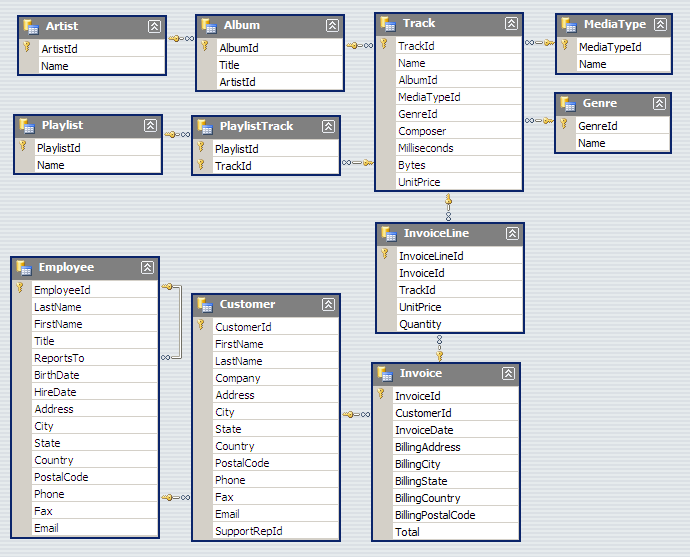
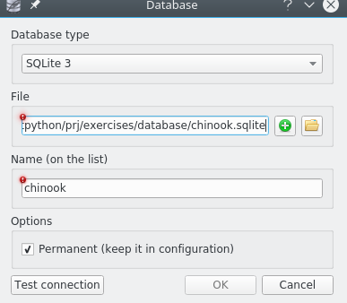
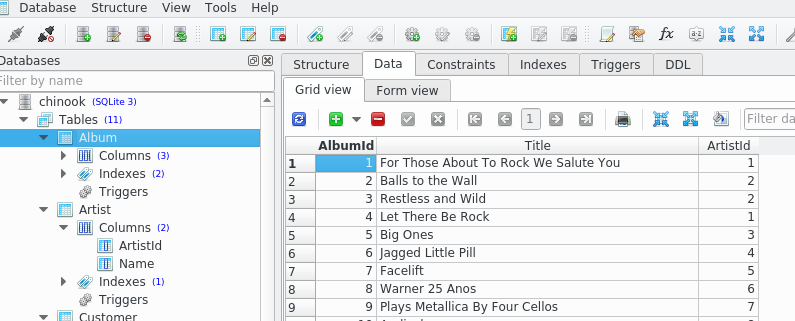
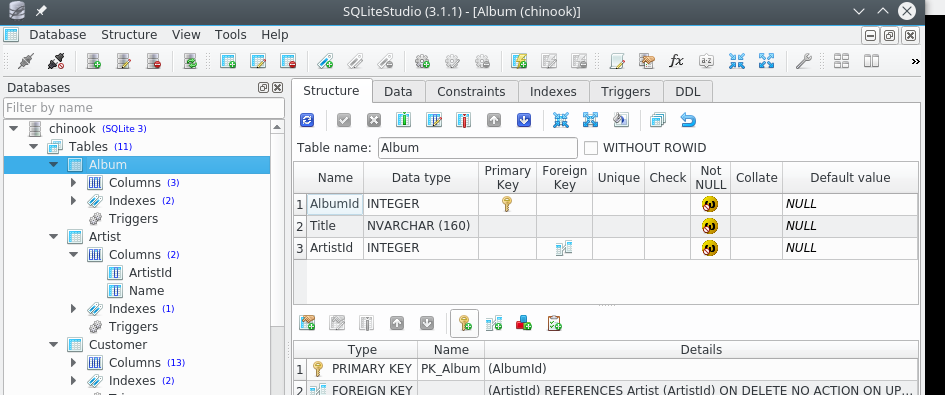
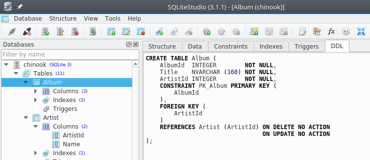

Database
Downlod exercises zip
In this tutorial we will give a simple overview of connecting to databases with Python, focusing on:
using SQLStudio to connect to a SQLite database
simple SQL queries from Python
examples using pandas module
What to do
Unzip exercises zip in a folder, you should obtain something like this:
database
database.ipynb
database-sol.ipynb
jupman.py
WARNING: to correctly visualize the notebook, it MUST be in an unzipped folder !
open Jupyter Notebook. Two things should open, first a console and then a browser. The browser should show a file list: navigate the folders and open the notebook
database.ipynbGo on reading the exercises file, sometimes you will find paragraphs marked Exercises which will ask to write Python commands in the following cells.
Shortcut keys:
to execute Python code inside a Jupyter cell, press
Control + Enterto execute Python code inside a Jupyter cell AND select next cell, press
Shift + Enterto execute Python code inside a Jupyter cell AND a create a new cell aftwerwards, press
Alt + EnterIf the notebooks look stuck, try to select
Kernel -> Restart
A first look to the database
We will try accessing the Chihook database by both SQLiteStudio app and Python.
The Chinook data model represents an online store of songs, and includes tables Artist, Album, Track, Invoice and Customer:

Data comes from various sources:
song data were created using real data from iTunes catalog
clients data was manually created by using fake names
addresses are georeferentiable on Google Maps, and other data is well formatted (phone, fax, email, etc.)
sales data was auto-generated by using random data for a long 4 years period
SQLStudio connection
Download and try running SQLite Studio (no admin privileges are needed). If it gives you troubles, as an alternative you might try SQLite browser.
Once SQLStudio is downloaded and unzipped, execute it and then:
From the top menu, click
Database->Add Databaseand connect to databasechinook.sqlite:

Click on
Test connectionto verify the connection is working, then hitOK.
Let’s see a simple table like Album.
EXERCISE: Before going on, in SQLiteStudio find the top left menu under the node Tables and double-click on the Album table
Now, in the main panel on the right select Data tab:

We see 3 columns, a couple with numbers AlbumId and ArtistId, and one of strings called Title
NOTE: column names in SQL may be arbitrarily given by the database creators. So it is no strictly necessary for column names to end with Id.
Python connection
Let’s try now to retrieve in Python the same data from Album table. SQLite is so popular that the module to access it is directly provided with Python, so we don’t need to install anything in particular and we can directly dive into coding:
[1]:
import sqlite3
conn = sqlite3.connect('file:chinook.sqlite?mode=rw', uri=True)
The operation above creates a connection object and assignes it to the conn variable.
But what are we connecting to? The database seems located by the uri file:chinook.sqlite?mode=rw. But what’s an URI? It’s a string which denotes a location somewhere, like a database accessible as a service over the internet, or a file on our disk: in this case we want to point to a database we have on disk, so we will use the protocol file:
SQLite will then go looking searching the disk for the file chinook.sqlite, in the same folder where we are executing Jupyter. If the file were in some subdirectory, we could write something like some/folder/chinook.sqlite
NOTE 1: we are connecting to the database in binary format .sqlite , NOT to the text file .sql !
NOTE 2: we are specifying we want to open it in mode=rw, which means read + write. IF the database doesn’t exist, this function will raise an error.
NOTE 3: if we wanted to create a new database, we should use the the mode read + write + creation, specifying as parameter mode=rwc (note the final c )
NOTE 4: in many database systems (SQLite included), when we connect to a non-existing database, by default a new one is created. This is cause of many curses, because if by mistake you write a wrong database name no errors appear, and you will find yourself connected to an empty database - wondering where the data is gone. Worse, you will also find your disk filled with wrong database names!
By means of the connection object conn we can create a so called cursor, which will allow us to execute queries on the database. By using a connection to perform a query, we are telling Python to ask a resource to the system. Good etiquette tells us that whenever we borrow something, after using it we should give it back. In Python the ‘giving back’ would mean closing the opened resource. But while we are using the resource errors might happen, which would prevent us from properly
closing the resource. To ensure Python will properly close the resource automatically on error, we can use the command with as we’ve already done for files:
[2]:
import sqlite3
conn = sqlite3.connect('file:chinook.sqlite?mode=rw', uri=True)
with conn: # 'with' shields ourselves from unpredictable errors
cursor = conn.cursor() # we obtain the cursor
cursor.execute("SELECT * FROM Album LIMIT 5") # execute a query to database
# in SQL language
# note 'execute' call does not
# return values
for row in cursor.fetchall(): # cursor fetchall() generates a sequence
# of rows as query result
# in sequence, the rows are assigned to
# 'row' object one at a time
print(row) # we print the obtained row
(1, 'For Those About To Rock We Salute You', 1)
(2, 'Balls to the Wall', 2)
(3, 'Restless and Wild', 2)
(4, 'Let There Be Rock', 1)
(5, 'Big Ones', 3)
Finally we obtained the list of first 5 database rows from the Album table.
EXERCISE: try writing down here the instructions to directly print the whole result from cursor.fetchall()
What type of object do you obtain?
Furthermore, what’s the type of the single rows (note they are represented in round parenthesis)?
Performance
Databases are specifically designed to handle great amount of data to be stored in hard-disks. Let’s briefly review the various types of memory available in a computer, and how they are used in databases:
Memory |
Velocity* |
Quantity |
Notes |
|---|---|---|---|
RAM |
1x |
4-16 gigabytes |
erased when computer turns off |
SSD Disk |
2x-10x |
hundreds of gigabytes |
persistent, but too many writes may ruin it |
Hard disk |
100x |
hundreds of gigabytes, terabytes |
persistent, can support numerous write cycles |
* slowiness with respect to RAM
If we perform complex queries which potentially deal with a lot of data, we can’t always store everything into the RAM. Suppose we’re asking the db to calculate the average of all song sales (let’s imagine we have a terabyte of songs). Luckily enough, very often the database is smart enough to create a plan to optimize resource usage.
When thinking about the sold songs, it could autonomously perform all these operations:
load from hard-disk to RAM 4 gigabytes of songs
calculate average sales of these songs in the current RAM block
unload the RAM
load other 4 gigabytes of songs from hard-disk to RAM
calculate average sales of second songs block in RAM block, and aggregate with the previously calculated average
unload the RAM
etc ….
In an ideal scenario, we can write complex SQL queries and hope the database rapidly gives to Python all the results we needed, thus saving us a lot of work. Alas, sometimes this is not possible: if the database takes forever to perform computations, we could be forced to manually optimize the SQL query, or the way we load and elaborate data in Python. For brevity, in this tutorial we will only deal with the latter case (in a simplified way).
Taking data a bit at a time
In the first Python commands above, we’ve seen how to take a bit of rows from the DB by using the SQL option LIMIT, and how to load all these rows into a Python list in one shot with fetchall . What if we wanted to print to screen all the rows from a 1 terabyte table? If we tried to load all of them into a list, Python would saturate all the RAM memory for sure. As an alternative to fetchall, we can use the command fetchmany, which takes a bit of rows each time:
[4]:
import sqlite3
conn = sqlite3.connect('file:chinook.sqlite?mode=rw', uri=True)
with conn:
cursor = conn.cursor()
cursor.execute("SELECT * FROM Album")
while True: # as long as True is .. true, that is, the cycle never ends ...
rows = cursor.fetchmany(5) # takes 5 rows
if len(rows) > 0: # if we have rows, prints them
for row in rows:
print(row)
else: # otherwise the while cycle
break # gets interrupted
(1, 'For Those About To Rock We Salute You', 1)
(2, 'Balls to the Wall', 2)
(3, 'Restless and Wild', 2)
(4, 'Let There Be Rock', 1)
(5, 'Big Ones', 3)
(6, 'Jagged Little Pill', 4)
(7, 'Facelift', 5)
(8, 'Warner 25 Anos', 6)
(9, 'Plays Metallica By Four Cellos', 7)
(10, 'Audioslave', 8)
(11, 'Out Of Exile', 8)
(12, 'BackBeat Soundtrack', 9)
(13, 'The Best Of Billy Cobham', 10)
(14, 'Alcohol Fueled Brewtality Live! [Disc 1]', 11)
(15, 'Alcohol Fueled Brewtality Live! [Disc 2]', 11)
(16, 'Black Sabbath', 12)
(17, 'Black Sabbath Vol. 4 (Remaster)', 12)
(18, 'Body Count', 13)
(19, 'Chemical Wedding', 14)
(20, 'The Best Of Buddy Guy - The Millenium Collection', 15)
(21, 'Prenda Minha', 16)
(22, 'Sozinho Remix Ao Vivo', 16)
(23, 'Minha Historia', 17)
(24, 'Afrociberdelia', 18)
(25, 'Da Lama Ao Caos', 18)
(26, 'Acústico MTV [Live]', 19)
(27, 'Cidade Negra - Hits', 19)
(28, 'Na Pista', 20)
(29, 'Axé Bahia 2001', 21)
(30, 'BBC Sessions [Disc 1] [Live]', 22)
(31, 'Bongo Fury', 23)
(32, 'Carnaval 2001', 21)
(33, 'Chill: Brazil (Disc 1)', 24)
(34, 'Chill: Brazil (Disc 2)', 6)
(35, 'Garage Inc. (Disc 1)', 50)
(36, 'Greatest Hits II', 51)
(37, 'Greatest Kiss', 52)
(38, 'Heart of the Night', 53)
(39, 'International Superhits', 54)
(40, 'Into The Light', 55)
(41, 'Meus Momentos', 56)
(42, 'Minha História', 57)
(43, 'MK III The Final Concerts [Disc 1]', 58)
(44, 'Physical Graffiti [Disc 1]', 22)
(45, 'Sambas De Enredo 2001', 21)
(46, 'Supernatural', 59)
(47, 'The Best of Ed Motta', 37)
(48, 'The Essential Miles Davis [Disc 1]', 68)
(49, 'The Essential Miles Davis [Disc 2]', 68)
(50, 'The Final Concerts (Disc 2)', 58)
(51, "Up An' Atom", 69)
(52, 'Vinícius De Moraes - Sem Limite', 70)
(53, 'Vozes do MPB', 21)
(54, 'Chronicle, Vol. 1', 76)
(55, 'Chronicle, Vol. 2', 76)
(56, 'Cássia Eller - Coleção Sem Limite [Disc 2]', 77)
(57, 'Cássia Eller - Sem Limite [Disc 1]', 77)
(58, 'Come Taste The Band', 58)
(59, 'Deep Purple In Rock', 58)
(60, 'Fireball', 58)
(61, "Knocking at Your Back Door: The Best Of Deep Purple in the 80's", 58)
(62, 'Machine Head', 58)
(63, 'Purpendicular', 58)
(64, 'Slaves And Masters', 58)
(65, 'Stormbringer', 58)
(66, 'The Battle Rages On', 58)
(67, "Vault: Def Leppard's Greatest Hits", 78)
(68, 'Outbreak', 79)
(69, 'Djavan Ao Vivo - Vol. 02', 80)
(70, 'Djavan Ao Vivo - Vol. 1', 80)
(71, 'Elis Regina-Minha História', 41)
(72, 'The Cream Of Clapton', 81)
(73, 'Unplugged', 81)
(74, 'Album Of The Year', 82)
(75, 'Angel Dust', 82)
(76, 'King For A Day Fool For A Lifetime', 82)
(77, 'The Real Thing', 82)
(78, 'Deixa Entrar', 83)
(79, 'In Your Honor [Disc 1]', 84)
(80, 'In Your Honor [Disc 2]', 84)
(81, 'One By One', 84)
(82, 'The Colour And The Shape', 84)
(83, 'My Way: The Best Of Frank Sinatra [Disc 1]', 85)
(84, 'Roda De Funk', 86)
(85, 'As Canções de Eu Tu Eles', 27)
(86, 'Quanta Gente Veio Ver (Live)', 27)
(87, 'Quanta Gente Veio ver--Bônus De Carnaval', 27)
(88, 'Faceless', 87)
(89, 'American Idiot', 54)
(90, 'Appetite for Destruction', 88)
(91, 'Use Your Illusion I', 88)
(92, 'Use Your Illusion II', 88)
(93, 'Blue Moods', 89)
(94, 'A Matter of Life and Death', 90)
(95, 'A Real Dead One', 90)
(96, 'A Real Live One', 90)
(97, 'Brave New World', 90)
(98, 'Dance Of Death', 90)
(99, 'Fear Of The Dark', 90)
(100, 'Iron Maiden', 90)
(101, 'Killers', 90)
(102, 'Live After Death', 90)
(103, 'Live At Donington 1992 (Disc 1)', 90)
(104, 'Live At Donington 1992 (Disc 2)', 90)
(105, 'No Prayer For The Dying', 90)
(106, 'Piece Of Mind', 90)
(107, 'Powerslave', 90)
(108, 'Rock In Rio [CD1]', 90)
(109, 'Rock In Rio [CD2]', 90)
(110, 'Seventh Son of a Seventh Son', 90)
(111, 'Somewhere in Time', 90)
(112, 'The Number of The Beast', 90)
(113, 'The X Factor', 90)
(114, 'Virtual XI', 90)
(115, 'Sex Machine', 91)
(116, 'Emergency On Planet Earth', 92)
(117, 'Synkronized', 92)
(118, 'The Return Of The Space Cowboy', 92)
(119, 'Get Born', 93)
(120, 'Are You Experienced?', 94)
(121, 'Surfing with the Alien (Remastered)', 95)
(122, 'Jorge Ben Jor 25 Anos', 46)
(123, 'Jota Quest-1995', 96)
(124, 'Cafezinho', 97)
(125, 'Living After Midnight', 98)
(126, 'Unplugged [Live]', 52)
(127, 'BBC Sessions [Disc 2] [Live]', 22)
(128, 'Coda', 22)
(129, 'Houses Of The Holy', 22)
(130, 'In Through The Out Door', 22)
(131, 'IV', 22)
(132, 'Led Zeppelin I', 22)
(133, 'Led Zeppelin II', 22)
(134, 'Led Zeppelin III', 22)
(135, 'Physical Graffiti [Disc 2]', 22)
(136, 'Presence', 22)
(137, 'The Song Remains The Same (Disc 1)', 22)
(138, 'The Song Remains The Same (Disc 2)', 22)
(139, 'A TempestadeTempestade Ou O Livro Dos Dias', 99)
(140, 'Mais Do Mesmo', 99)
(141, 'Greatest Hits', 100)
(142, 'Lulu Santos - RCA 100 Anos De Música - Álbum 01', 101)
(143, 'Lulu Santos - RCA 100 Anos De Música - Álbum 02', 101)
(144, 'Misplaced Childhood', 102)
(145, 'Barulhinho Bom', 103)
(146, 'Seek And Shall Find: More Of The Best (1963-1981)', 104)
(147, 'The Best Of Men At Work', 105)
(148, 'Black Album', 50)
(149, 'Garage Inc. (Disc 2)', 50)
(150, "Kill 'Em All", 50)
(151, 'Load', 50)
(152, 'Master Of Puppets', 50)
(153, 'ReLoad', 50)
(154, 'Ride The Lightning', 50)
(155, 'St. Anger', 50)
(156, '...And Justice For All', 50)
(157, 'Miles Ahead', 68)
(158, 'Milton Nascimento Ao Vivo', 42)
(159, 'Minas', 42)
(160, 'Ace Of Spades', 106)
(161, 'Demorou...', 108)
(162, 'Motley Crue Greatest Hits', 109)
(163, 'From The Muddy Banks Of The Wishkah [Live]', 110)
(164, 'Nevermind', 110)
(165, 'Compositores', 111)
(166, 'Olodum', 112)
(167, 'Acústico MTV', 113)
(168, 'Arquivo II', 113)
(169, 'Arquivo Os Paralamas Do Sucesso', 113)
(170, 'Bark at the Moon (Remastered)', 114)
(171, 'Blizzard of Ozz', 114)
(172, 'Diary of a Madman (Remastered)', 114)
(173, 'No More Tears (Remastered)', 114)
(174, 'Tribute', 114)
(175, 'Walking Into Clarksdale', 115)
(176, 'Original Soundtracks 1', 116)
(177, 'The Beast Live', 117)
(178, 'Live On Two Legs [Live]', 118)
(179, 'Pearl Jam', 118)
(180, 'Riot Act', 118)
(181, 'Ten', 118)
(182, 'Vs.', 118)
(183, 'Dark Side Of The Moon', 120)
(184, 'Os Cães Ladram Mas A Caravana Não Pára', 121)
(185, 'Greatest Hits I', 51)
(186, 'News Of The World', 51)
(187, 'Out Of Time', 122)
(188, 'Green', 124)
(189, 'New Adventures In Hi-Fi', 124)
(190, 'The Best Of R.E.M.: The IRS Years', 124)
(191, 'Cesta Básica', 125)
(192, 'Raul Seixas', 126)
(193, 'Blood Sugar Sex Magik', 127)
(194, 'By The Way', 127)
(195, 'Californication', 127)
(196, 'Retrospective I (1974-1980)', 128)
(197, 'Santana - As Years Go By', 59)
(198, 'Santana Live', 59)
(199, 'Maquinarama', 130)
(200, 'O Samba Poconé', 130)
(201, 'Judas 0: B-Sides and Rarities', 131)
(202, 'Rotten Apples: Greatest Hits', 131)
(203, 'A-Sides', 132)
(204, 'Morning Dance', 53)
(205, 'In Step', 133)
(206, 'Core', 134)
(207, 'Mezmerize', 135)
(208, '[1997] Black Light Syndrome', 136)
(209, 'Live [Disc 1]', 137)
(210, 'Live [Disc 2]', 137)
(211, 'The Singles', 138)
(212, 'Beyond Good And Evil', 139)
(213, 'Pure Cult: The Best Of The Cult (For Rockers, Ravers, Lovers & Sinners) [UK]', 139)
(214, 'The Doors', 140)
(215, 'The Police Greatest Hits', 141)
(216, 'Hot Rocks, 1964-1971 (Disc 1)', 142)
(217, 'No Security', 142)
(218, 'Voodoo Lounge', 142)
(219, 'Tangents', 143)
(220, 'Transmission', 143)
(221, 'My Generation - The Very Best Of The Who', 144)
(222, 'Serie Sem Limite (Disc 1)', 145)
(223, 'Serie Sem Limite (Disc 2)', 145)
(224, 'Acústico', 146)
(225, 'Volume Dois', 146)
(226, 'Battlestar Galactica: The Story So Far', 147)
(227, 'Battlestar Galactica, Season 3', 147)
(228, 'Heroes, Season 1', 148)
(229, 'Lost, Season 3', 149)
(230, 'Lost, Season 1', 149)
(231, 'Lost, Season 2', 149)
(232, 'Achtung Baby', 150)
(233, "All That You Can't Leave Behind", 150)
(234, 'B-Sides 1980-1990', 150)
(235, 'How To Dismantle An Atomic Bomb', 150)
(236, 'Pop', 150)
(237, 'Rattle And Hum', 150)
(238, 'The Best Of 1980-1990', 150)
(239, 'War', 150)
(240, 'Zooropa', 150)
(241, 'UB40 The Best Of - Volume Two [UK]', 151)
(242, 'Diver Down', 152)
(243, 'The Best Of Van Halen, Vol. I', 152)
(244, 'Van Halen', 152)
(245, 'Van Halen III', 152)
(246, 'Contraband', 153)
(247, 'Vinicius De Moraes', 72)
(248, 'Ao Vivo [IMPORT]', 155)
(249, 'The Office, Season 1', 156)
(250, 'The Office, Season 2', 156)
(251, 'The Office, Season 3', 156)
(252, 'Un-Led-Ed', 157)
(253, 'Battlestar Galactica (Classic), Season 1', 158)
(254, 'Aquaman', 159)
(255, 'Instant Karma: The Amnesty International Campaign to Save Darfur', 150)
(256, 'Speak of the Devil', 114)
(257, '20th Century Masters - The Millennium Collection: The Best of Scorpions', 179)
(258, 'House of Pain', 180)
(259, 'Radio Brasil (O Som da Jovem Vanguarda) - Seleccao de Henrique Amaro', 36)
(260, 'Cake: B-Sides and Rarities', 196)
(261, 'LOST, Season 4', 149)
(262, 'Quiet Songs', 197)
(263, 'Muso Ko', 198)
(264, 'Realize', 199)
(265, 'Every Kind of Light', 200)
(266, 'Duos II', 201)
(267, 'Worlds', 202)
(268, 'The Best of Beethoven', 203)
(269, 'Temple of the Dog', 204)
(270, 'Carry On', 205)
(271, 'Revelations', 8)
(272, 'Adorate Deum: Gregorian Chant from the Proper of the Mass', 206)
(273, 'Allegri: Miserere', 207)
(274, 'Pachelbel: Canon & Gigue', 208)
(275, 'Vivaldi: The Four Seasons', 209)
(276, 'Bach: Violin Concertos', 210)
(277, 'Bach: Goldberg Variations', 211)
(278, 'Bach: The Cello Suites', 212)
(279, 'Handel: The Messiah (Highlights)', 213)
(280, 'The World of Classical Favourites', 214)
(281, 'Sir Neville Marriner: A Celebration', 215)
(282, 'Mozart: Wind Concertos', 216)
(283, 'Haydn: Symphonies 99 - 104', 217)
(284, 'Beethoven: Symhonies Nos. 5 & 6', 218)
(285, 'A Soprano Inspired', 219)
(286, 'Great Opera Choruses', 220)
(287, 'Wagner: Favourite Overtures', 221)
(288, 'Fauré: Requiem, Ravel: Pavane & Others', 222)
(289, 'Tchaikovsky: The Nutcracker', 223)
(290, 'The Last Night of the Proms', 224)
(291, 'Puccini: Madama Butterfly - Highlights', 225)
(292, 'Holst: The Planets, Op. 32 & Vaughan Williams: Fantasies', 226)
(293, "Pavarotti's Opera Made Easy", 227)
(294, "Great Performances - Barber's Adagio and Other Romantic Favorites for Strings", 228)
(295, 'Carmina Burana', 229)
(296, 'A Copland Celebration, Vol. I', 230)
(297, 'Bach: Toccata & Fugue in D Minor', 231)
(298, 'Prokofiev: Symphony No.1', 232)
(299, 'Scheherazade', 233)
(300, 'Bach: The Brandenburg Concertos', 234)
(301, 'Chopin: Piano Concertos Nos. 1 & 2', 235)
(302, 'Mascagni: Cavalleria Rusticana', 236)
(303, 'Sibelius: Finlandia', 237)
(304, 'Beethoven Piano Sonatas: Moonlight & Pastorale', 238)
(305, 'Great Recordings of the Century - Mahler: Das Lied von der Erde', 240)
(306, 'Elgar: Cello Concerto & Vaughan Williams: Fantasias', 241)
(307, 'Adams, John: The Chairman Dances', 242)
(308, "Tchaikovsky: 1812 Festival Overture, Op.49, Capriccio Italien & Beethoven: Wellington's Victory", 243)
(309, 'Palestrina: Missa Papae Marcelli & Allegri: Miserere', 244)
(310, 'Prokofiev: Romeo & Juliet', 245)
(311, 'Strauss: Waltzes', 226)
(312, 'Berlioz: Symphonie Fantastique', 245)
(313, 'Bizet: Carmen Highlights', 246)
(314, 'English Renaissance', 247)
(315, 'Handel: Music for the Royal Fireworks (Original Version 1749)', 208)
(316, 'Grieg: Peer Gynt Suites & Sibelius: Pelléas et Mélisande', 248)
(317, 'Mozart Gala: Famous Arias', 249)
(318, 'SCRIABIN: Vers la flamme', 250)
(319, 'Armada: Music from the Courts of England and Spain', 251)
(320, 'Mozart: Symphonies Nos. 40 & 41', 248)
(321, 'Back to Black', 252)
(322, 'Frank', 252)
(323, 'Carried to Dust (Bonus Track Version)', 253)
(324, "Beethoven: Symphony No. 6 'Pastoral' Etc.", 254)
(325, 'Bartok: Violin & Viola Concertos', 255)
(326, "Mendelssohn: A Midsummer Night's Dream", 256)
(327, 'Bach: Orchestral Suites Nos. 1 - 4', 257)
(328, 'Charpentier: Divertissements, Airs & Concerts', 258)
(329, 'South American Getaway', 259)
(330, 'Górecki: Symphony No. 3', 260)
(331, 'Purcell: The Fairy Queen', 261)
(332, 'The Ultimate Relexation Album', 262)
(333, 'Purcell: Music for the Queen Mary', 263)
(334, 'Weill: The Seven Deadly Sins', 264)
(335, 'J.S. Bach: Chaconne, Suite in E Minor, Partita in E Major & Prelude, Fugue and Allegro', 265)
(336, 'Prokofiev: Symphony No.5 & Stravinksy: Le Sacre Du Printemps', 248)
(337, 'Szymanowski: Piano Works, Vol. 1', 266)
(338, 'Nielsen: The Six Symphonies', 267)
(339, "Great Recordings of the Century: Paganini's 24 Caprices", 268)
(340, "Liszt - 12 Études D'Execution Transcendante", 269)
(341, 'Great Recordings of the Century - Shubert: Schwanengesang, 4 Lieder', 270)
(342, 'Locatelli: Concertos for Violin, Strings and Continuo, Vol. 3', 271)
(343, 'Respighi:Pines of Rome', 226)
(344, "Schubert: The Late String Quartets & String Quintet (3 CD's)", 272)
(345, "Monteverdi: L'Orfeo", 273)
(346, 'Mozart: Chamber Music', 274)
(347, 'Koyaanisqatsi (Soundtrack from the Motion Picture)', 275)
Passing parameters to the query
What if we wanted an wasy way to pass parameters to the query, like for example the number of results to fetch? To this end, we can use so-called placeholders, which are question mark characters ? marking where we want to put the variables into. In this case we will substitute the 5 with a question mark ?, and pass 5 in a separate parameter list:
[5]:
import sqlite3
conn = sqlite3.connect('file:chinook.sqlite?mode=rw', uri=True)
with conn: # 'with' block takes care of unexpected errors
cursor = conn.cursor() # obtain the cursor
# we execute a query to the db in SQL language
# note 'execute' call doesn't return stuff
cursor.execute("SELECT * FROM Album LIMIT ?", [5])
for riga in cursor.fetchall(): # cursor.fetchall() generates a sequence of
# rows holding the query results. One at a
# time, rows are assigned to the 'row' object
print(riga) # print the obtained row
(1, 'For Those About To Rock We Salute You', 1)
(2, 'Balls to the Wall', 2)
(3, 'Restless and Wild', 2)
(4, 'Let There Be Rock', 1)
(5, 'Big Ones', 3)
We can also put several question marks, and then for each simply pass the corresponding parameter in the list:
[6]:
import sqlite3
conn = sqlite3.connect('file:chinook.sqlite?mode=rw', uri=True)
with conn: # 'with' block takes care of unexpected errors
cursore = conn.cursor() # obtain the cursor
cursore.execute("SELECT * FROM Album WHERE AlbumId < ? AND ArtistId < ?", [30,5])
for riga in cursore.fetchall(): # cursor.fetchall() generates a sequence of
# rows holding the query results. One at a
# time, rows are assigned to the 'row' object
print(riga) # print the obtained row
(1, 'For Those About To Rock We Salute You', 1)
(2, 'Balls to the Wall', 2)
(3, 'Restless and Wild', 2)
(4, 'Let There Be Rock', 1)
(5, 'Big Ones', 3)
(6, 'Jagged Little Pill', 4)
Execute query function
To ease further operations, we define a function exec_query which runs the desired query and returns a list of fetched rows:
IMPORTANT: Hit Ctrl+Enter in the following cell so Python will later recognize the function:
[7]:
def exec_query(conn, query, params=()):
"""
Executes a quesy by using the connection conn, and then returns a list with the obtained results.
In params we can put a list of parameters for our query
"""
with conn:
cur = conn.cursor()
cur.execute(query, params)
return cur.fetchall()
Let’s try:
[8]:
import sqlite3
conn = sqlite3.connect('file:chinook.sqlite?mode=rw', uri=True)
exec_query(conn, "SELECT * FROM Album LIMIT 5")
[8]:
[(1, 'For Those About To Rock We Salute You', 1),
(2, 'Balls to the Wall', 2),
(3, 'Restless and Wild', 2),
(4, 'Let There Be Rock', 1),
(5, 'Big Ones', 3)]
Even better, for extra clarity we can rewrite the query by using a string on many lines with enclosing triple double quotes:
[9]:
import sqlite3
conn = sqlite3.connect('file:chinook.sqlite?mode=rw', uri=True)
exec_query(conn, """
SELECT *
FROM Album
LIMIT 5
""")
[9]:
[(1, 'For Those About To Rock We Salute You', 1),
(2, 'Balls to the Wall', 2),
(3, 'Restless and Wild', 2),
(4, 'Let There Be Rock', 1),
(5, 'Big Ones', 3)]
Let’s try passing some parameters:
[10]:
exec_query(conn, """
SELECT *
FROM Album
WHERE AlbumId < ? AND ArtistId < ?
""", [30, 5])
[10]:
[(1, 'For Those About To Rock We Salute You', 1),
(2, 'Balls to the Wall', 2),
(3, 'Restless and Wild', 2),
(4, 'Let There Be Rock', 1),
(5, 'Big Ones', 3),
(6, 'Jagged Little Pill', 4)]
EXERCISE: Try creating a query in SQLStudio to select albums with id between 3 and 5 included:
open the query editor with
Alt+Ewrite the query
execute it by hitting
F9
EXERCISE: call exec_query function with the same query, using parameters
[11]:
# write here the command
[11]:
[(3, 'Restless and Wild', 2), (4, 'Let There Be Rock', 1), (5, 'Big Ones', 3)]
Table structure
EXERCISE: Have a better look at the tab Structure of Album:

DDL
Compare above stuff with the tab DDL (Data Definition Language), which contains SQL instructions to create the table in the database:

A feature of databases is the possibility to declare constrants on the inserted data. For example, here we note that:
the table
Albumhas aPRIMARY KEY, asserting there cannot be two rows with the sameAlbumIdthe table
Albumdefines the columnArtistIdas aFOREIGN KEY, asserting that for each value in that column, there must always be a corresponding existing id in the columnArtistIdfrom Artist table. Thus, it will be impossible to refer to a non-existing artist.
EXERCISE: Go to tab Data and try changing an ArtistId by placing a non-exinsting number (like 1000). Apparently the database won’t complain, but only because we haven’t recorded the change on disk yet, in other words, we haven’t still performed a commit operation. Commits allow us to execute many operations in an atomic way, meaning that either all changes are recorded to disk or none of the changes are performed.
Try executing a commit by clicking the green button with the tick (or by hitting Ctrl-Return). What happens? To recover from the damage just inflicted to the database, click the red button rollback with the x (or hit Ctrl-Backspace).
Query to metadata
An interesting and sometimes useful feature of many SQL databases is the presence of metadata describing the table structure, and the metadata itself may be stored in tabular format. For example, with SQLite you can execute a query like this (we don’t explain it in detail and just show some example):
[12]:
def query_schema(conn, table):
""" Return a string with the SQL instructions to create a table
(without the data)
"""
return exec_query(conn, """
SELECT sql FROM sqlite_master
WHERE name = ?
""", (table,))[0][0]
[13]:
import sqlite3
conn = sqlite3.connect('file:chinook.sqlite?mode=rw', uri=True)
print(query_schema(conn, 'Album'))
CREATE TABLE [Album]
(
[AlbumId] INTEGER NOT NULL,
[Title] NVARCHAR(160) NOT NULL,
[ArtistId] INTEGER NOT NULL,
CONSTRAINT [PK_Album] PRIMARY KEY ([AlbumId]),
FOREIGN KEY ([ArtistId]) REFERENCES [Artist] ([ArtistId])
ON DELETE NO ACTION ON UPDATE NO ACTION
)
ORDER BY
Very often we will want to sort the result according to some column: to do so we can add the ORDER BY clause.
NOTE: if we add LIMIT, it is going to be applied AFTER the sorting has been performed:
[14]:
exec_query(conn, """
SELECT *
FROM Album
ORDER BY Album.Title
LIMIT 10
""")
[14]:
[(156, '...And Justice For All', 50),
(257,
'20th Century Masters - The Millennium Collection: The Best of Scorpions',
179),
(296, 'A Copland Celebration, Vol. I', 230),
(94, 'A Matter of Life and Death', 90),
(95, 'A Real Dead One', 90),
(96, 'A Real Live One', 90),
(285, 'A Soprano Inspired', 219),
(139, 'A TempestadeTempestade Ou O Livro Dos Dias', 99),
(203, 'A-Sides', 132),
(160, 'Ace Of Spades', 106)]
To sort in descending order we can add DESC:
[15]:
exec_query(conn, """
SELECT *
FROM Album
ORDER BY Album.Title DESC
LIMIT 10
""")
[15]:
[(208, '[1997] Black Light Syndrome', 136),
(240, 'Zooropa', 150),
(267, 'Worlds', 202),
(334, 'Weill: The Seven Deadly Sins', 264),
(8, 'Warner 25 Anos', 6),
(239, 'War', 150),
(175, 'Walking Into Clarksdale', 115),
(287, 'Wagner: Favourite Overtures', 221),
(182, 'Vs.', 118),
(53, 'Vozes do MPB', 21)]
JOIN
In the Album table for artists we only see some numbers. How can we perform a query to also see the artist names? We can try the SQL command JOIN.
EXERCISE: To understand what happens, execute the query in SQLStudio
[16]:
exec_query(conn, """
SELECT *
FROM Album JOIN Artist
WHERE Album.ArtistId = Artist.ArtistId
LIMIT 5
""")
[16]:
[(1, 'For Those About To Rock We Salute You', 1, 1, 'AC/DC'),
(2, 'Balls to the Wall', 2, 2, 'Accept'),
(3, 'Restless and Wild', 2, 2, 'Accept'),
(4, 'Let There Be Rock', 1, 1, 'AC/DC'),
(5, 'Big Ones', 3, 3, 'Aerosmith')]
Instead of the JOIN, we can use a comma ,:
[17]:
exec_query(conn, """
SELECT * FROM Album, Artist
WHERE Album.ArtistId = Artist.ArtistId
LIMIT 5
""")
[17]:
[(1, 'For Those About To Rock We Salute You', 1, 1, 'AC/DC'),
(2, 'Balls to the Wall', 2, 2, 'Accept'),
(3, 'Restless and Wild', 2, 2, 'Accept'),
(4, 'Let There Be Rock', 1, 1, 'AC/DC'),
(5, 'Big Ones', 3, 3, 'Aerosmith')]
Even better, since in this case we have the same column name in both tables, we can try the USING clause which also eliminates the duplicated column.
NOTE: For obscure reasons, in SQLiteStudio the column ArtistId appears duplicated anyway with the name ArtistiId:1
[18]:
exec_query(conn, """
SELECT *
FROM Album, Artist USING(ArtistId)
LIMIT 5
""")
[18]:
[(1, 'For Those About To Rock We Salute You', 1, 'AC/DC'),
(2, 'Balls to the Wall', 2, 'Accept'),
(3, 'Restless and Wild', 2, 'Accept'),
(4, 'Let There Be Rock', 1, 'AC/DC'),
(5, 'Big Ones', 3, 'Aerosmith')]
Finally, we can select only the column we’re interested in: album Title and artist Name. For added clarity, we can identify the tables with variables we assign in FROM clause - here we use the names ALB and ART but they could be any of your choice:
[19]:
exec_query(conn, """
SELECT ALB.Title, ART.Name
FROM Album ALB, Artist ART USING(ArtistId)
LIMIT 5
""")
[19]:
[('For Those About To Rock We Salute You', 'AC/DC'),
('Balls to the Wall', 'Accept'),
('Restless and Wild', 'Accept'),
('Let There Be Rock', 'AC/DC'),
('Big Ones', 'Aerosmith')]
Track Table
Let’s now switch to a more complex table like Track, which contains songs listened by iTunes users:
[20]:
exec_query(conn, "SELECT * FROM Track LIMIT 5")
[20]:
[(1,
'For Those About To Rock (We Salute You)',
1,
1,
1,
'Angus Young, Malcolm Young, Brian Johnson',
343719,
11170334,
0.99),
(2, 'Balls to the Wall', 2, 2, 1, None, 342562, 5510424, 0.99),
(3,
'Fast As a Shark',
3,
2,
1,
'F. Baltes, S. Kaufman, U. Dirkscneider & W. Hoffman',
230619,
3990994,
0.99),
(4,
'Restless and Wild',
3,
2,
1,
'F. Baltes, R.A. Smith-Diesel, S. Kaufman, U. Dirkscneider & W. Hoffman',
252051,
4331779,
0.99),
(5,
'Princess of the Dawn',
3,
2,
1,
'Deaffy & R.A. Smith-Diesel',
375418,
6290521,
0.99)]
[21]:
query_schema(conn, "Track")
[21]:
'CREATE TABLE [Track]\n(\n [TrackId] INTEGER NOT NULL,\n [Name] NVARCHAR(200) NOT NULL,\n [AlbumId] INTEGER,\n [MediaTypeId] INTEGER NOT NULL,\n [GenreId] INTEGER,\n [Composer] NVARCHAR(220),\n [Milliseconds] INTEGER NOT NULL,\n [Bytes] INTEGER,\n [UnitPrice] NUMERIC(10,2) NOT NULL,\n CONSTRAINT [PK_Track] PRIMARY KEY ([TrackId]),\n FOREIGN KEY ([AlbumId]) REFERENCES [Album] ([AlbumId]) \n\t\tON DELETE NO ACTION ON UPDATE NO ACTION,\n FOREIGN KEY ([GenreId]) REFERENCES [Genre] ([GenreId]) \n\t\tON DELETE NO ACTION ON UPDATE NO ACTION,\n FOREIGN KEY ([MediaTypeId]) REFERENCES [MediaType] ([MediaTypeId]) \n\t\tON DELETE NO ACTION ON UPDATE NO ACTION\n)'
[22]:
print(query_schema(conn, "Track"))
CREATE TABLE [Track]
(
[TrackId] INTEGER NOT NULL,
[Name] NVARCHAR(200) NOT NULL,
[AlbumId] INTEGER,
[MediaTypeId] INTEGER NOT NULL,
[GenreId] INTEGER,
[Composer] NVARCHAR(220),
[Milliseconds] INTEGER NOT NULL,
[Bytes] INTEGER,
[UnitPrice] NUMERIC(10,2) NOT NULL,
CONSTRAINT [PK_Track] PRIMARY KEY ([TrackId]),
FOREIGN KEY ([AlbumId]) REFERENCES [Album] ([AlbumId])
ON DELETE NO ACTION ON UPDATE NO ACTION,
FOREIGN KEY ([GenreId]) REFERENCES [Genre] ([GenreId])
ON DELETE NO ACTION ON UPDATE NO ACTION,
FOREIGN KEY ([MediaTypeId]) REFERENCES [MediaType] ([MediaTypeId])
ON DELETE NO ACTION ON UPDATE NO ACTION
)
[23]:
exec_query(conn, """
SELECT Name, Composer
FROM Track
LIMIT 5
""")
[23]:
[('For Those About To Rock (We Salute You)',
'Angus Young, Malcolm Young, Brian Johnson'),
('Balls to the Wall', None),
('Fast As a Shark', 'F. Baltes, S. Kaufman, U. Dirkscneider & W. Hoffman'),
('Restless and Wild',
'F. Baltes, R.A. Smith-Diesel, S. Kaufman, U. Dirkscneider & W. Hoffman'),
('Princess of the Dawn', 'Deaffy & R.A. Smith-Diesel')]
[24]:
exec_query(conn, """
SELECT Name, Composer
FROM Track
LIMIT 5
""")[0]
[24]:
('For Those About To Rock (We Salute You)',
'Angus Young, Malcolm Young, Brian Johnson')
Let’s have a look at the second row:
[25]:
exec_query(conn, """
SELECT Name, Composer
FROM Track
LIMIT 5
""")[1]
[25]:
('Balls to the Wall', None)
In this case we note the composer is missing. How is the missing composer represented in the original SQL table?
EXERCISE: Using SQLiteStudio, in the left menu double click on the Track table and then select the Data table on the right. Scroll the rows until you find the box with the column Composer.
Let’s try selecting some numerical values in our query, like for example the Milliseconds:
[26]:
exec_query(conn, """
SELECT Name, Milliseconds
FROM Track
LIMIT 5
""")
[26]:
[('For Those About To Rock (We Salute You)', 343719),
('Balls to the Wall', 342562),
('Fast As a Shark', 230619),
('Restless and Wild', 252051),
('Princess of the Dawn', 375418)]
[27]:
exec_query(conn, """
SELECT Name, Milliseconds
FROM Track
LIMIT 5
""")[0]
[27]:
('For Those About To Rock (We Salute You)', 343719)
[28]:
exec_query(conn, """
SELECT Name, Milliseconds
FROM Track
LIMIT 5
""")[0][0]
[28]:
'For Those About To Rock (We Salute You)'
[29]:
exec_query(conn, """
SELECT Name, Milliseconds
FROM Track
LIMIT 5
""")[0][1]
[29]:
343719
[30]:
exec_query(conn, """
SELECT Name, Milliseconds
FROM Track
ORDER BY Milliseconds DESC
LIMIT 5
""")
[30]:
[('Occupation / Precipice', 5286953),
('Through a Looking Glass', 5088838),
('Greetings from Earth, Pt. 1', 2960293),
('The Man With Nine Lives', 2956998),
('Battlestar Galactica, Pt. 2', 2956081)]
EXERCISE: Try using ASC instead of DESC
[31]:
# write here the query
[31]:
[('É Uma Partida De Futebol', 'Samuel Rosa', 1071),
('Now Sports', None, 4884),
('A Statistic', None, 6373),
('Oprah', None, 6635),
('Commercial 1', 'L. Muggerud', 7941)]
Aggregating data
COUNT
To count the table rows, we can use the keyword COUNT(*) in a SELECT. For example, to see how many tracks there are, we can do like this:
[32]:
exec_query(conn, """
SELECT COUNT(*)
FROM Track
""")
[32]:
[(3503,)]
QUESTION: the method above is way better than importing all the rows with Python and then performing a len. Why?
GROUP BY and COUNT
Each Track has associated a MediaTypeId. We might ask ourselves how many tracks are present for each media type .
To count, we will need the keyword
COUNT(*) AS Quantityin theSELECTto aggregate we need
GROUP BYafter theFROMlineto sort the counts in a decreasing way we will also use
ORDER BY Quantity DESC
Note: in this case COUNT(*) will count how many elements there are in each group, not in the whole table
[33]:
exec_query(conn, """
SELECT T.MediaTypeId, COUNT(*) AS Quantity
FROM Track T
GROUP BY T.MediaTypeId
ORDER BY Quantity DESC
""")
[33]:
[(1, 3034), (2, 237), (3, 214), (5, 11), (4, 7)]
EXERCISE: The MediaTypeId isn’t very descriptive. Write down a query to obtain couples with the MediaType name with the respective count. Try also executing the query in SQLStudio:
[34]:
# write here
[34]:
[('MPEG audio file', 3034),
('Protected AAC audio file', 237),
('Protected MPEG-4 video file', 214),
('AAC audio file', 11),
('Purchased AAC audio file', 7)]
EXERCISE: Write down here a query to create a table of two columns: the first should hold musical genre names, and the second the corresponding number of tracks for that genre.
Show solution[35]:
# write here
[35]:
[('Rock', 1297),
('Latin', 579),
('Metal', 374),
('Alternative & Punk', 332),
('Jazz', 130),
('TV Shows', 93),
('Blues', 81),
('Classical', 74),
('Drama', 64),
('R&B/Soul', 61),
('Reggae', 58),
('Pop', 48),
('Soundtrack', 43),
('Alternative', 40),
('Hip Hop/Rap', 35),
('Electronica/Dance', 30),
('Heavy Metal', 28),
('World', 28),
('Sci Fi & Fantasy', 26),
('Easy Listening', 24),
('Comedy', 17),
('Bossa Nova', 15),
('Science Fiction', 13),
('Rock And Roll', 12),
('Opera', 1)]
EXERCISE: Try now to find the average duration in milliseconds of each genre
USE the function
AVG(Track.Milliseconds)instead ofCOUNT(*):
[36]:
# write here
[36]:
[('Sci Fi & Fantasy', 2911783.0384615385),
('Science Fiction', 2625549.076923077),
('Drama', 2575283.78125),
('TV Shows', 2145041.0215053763),
('Comedy', 1585263.705882353),
('Metal', 309749.4438502674),
('Electronica/Dance', 302985.8),
('Heavy Metal', 297452.9285714286),
('Classical', 293867.5675675676),
('Jazz', 291755.3769230769),
('Rock', 283910.0431765613),
('Blues', 270359.77777777775),
('Alternative', 264058.525),
('Reggae', 247177.75862068965),
('Soundtrack', 244370.88372093023),
('Alternative & Punk', 234353.84939759035),
('Latin', 232859.26252158894),
('Pop', 229034.10416666666),
('World', 224923.82142857142),
('R&B/Soul', 220066.8524590164),
('Bossa Nova', 219590.0),
('Easy Listening', 189164.20833333334),
('Hip Hop/Rap', 178176.2857142857),
('Opera', 174813.0),
('Rock And Roll', 134643.5)]
Pandas
So far we used Python basic methods, but obviously processing everything in Pandas is way easier.
For more info about Pandas, have a look at its tutorial
[37]:
import pandas
df = pandas.read_sql_query("SELECT Name, Composer, Milliseconds from Track", conn)
[38]:
df
[38]:
| Name | Composer | Milliseconds | |
|---|---|---|---|
| 0 | For Those About To Rock (We Salute You) | Angus Young, Malcolm Young, Brian Johnson | 343719 |
| 1 | Balls to the Wall | None | 342562 |
| 2 | Fast As a Shark | F. Baltes, S. Kaufman, U. Dirkscneider & W. Ho... | 230619 |
| 3 | Restless and Wild | F. Baltes, R.A. Smith-Diesel, S. Kaufman, U. D... | 252051 |
| 4 | Princess of the Dawn | Deaffy & R.A. Smith-Diesel | 375418 |
| ... | ... | ... | ... |
| 3498 | Pini Di Roma (Pinien Von Rom) \ I Pini Della V... | None | 286741 |
| 3499 | String Quartet No. 12 in C Minor, D. 703 "Quar... | Franz Schubert | 139200 |
| 3500 | L'orfeo, Act 3, Sinfonia (Orchestra) | Claudio Monteverdi | 66639 |
| 3501 | Quintet for Horn, Violin, 2 Violas, and Cello ... | Wolfgang Amadeus Mozart | 221331 |
| 3502 | Koyaanisqatsi | Philip Glass | 206005 |
3503 rows × 3 columns
BEWARE of big databases !
Pandas is very handy, but as already explained Pandas loads everything in RAM which in a typical 2022 laptop goes from 4 to 16 gigabytes. If you have a big database you might incur into the problems exposed in section Performance
EXERCISE: Milliseconds and occupied bytes should reasonably be linearly dependent. Show it with Pandas.
Show solution[39]:
# write here
[ ]: